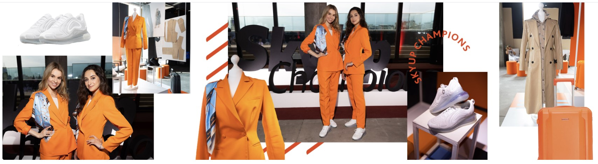
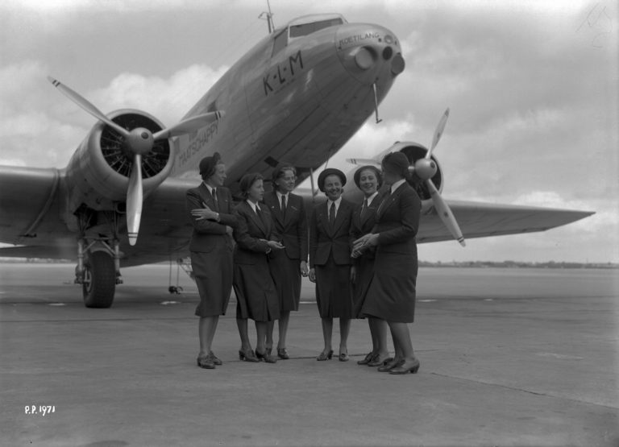
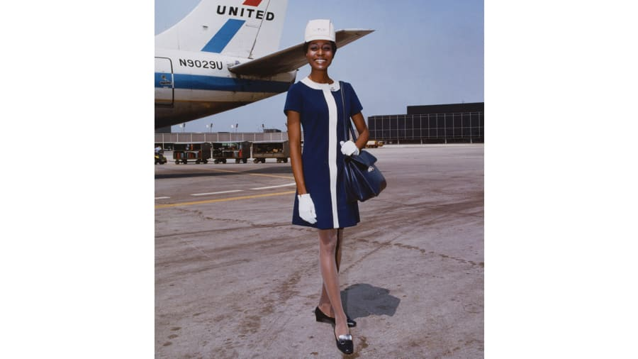
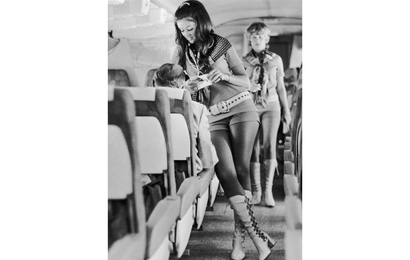
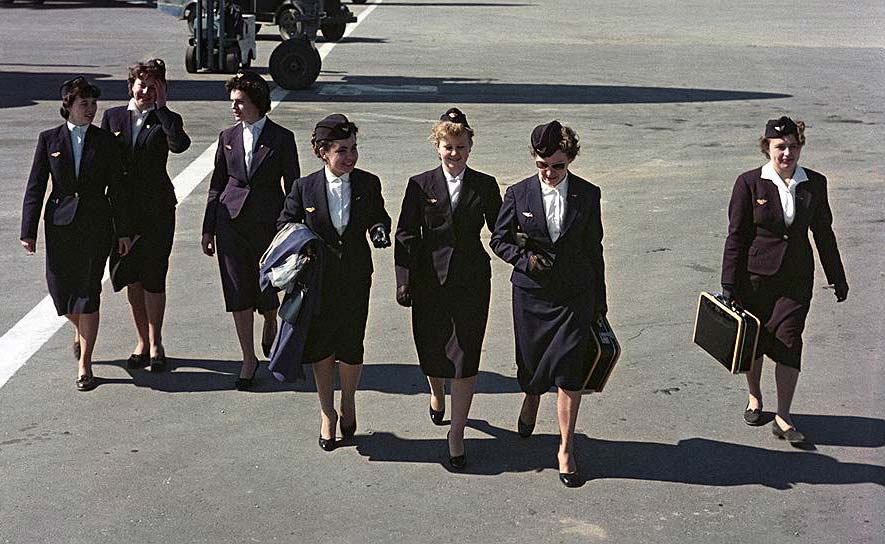
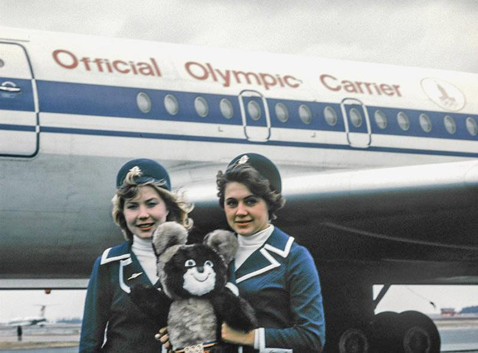
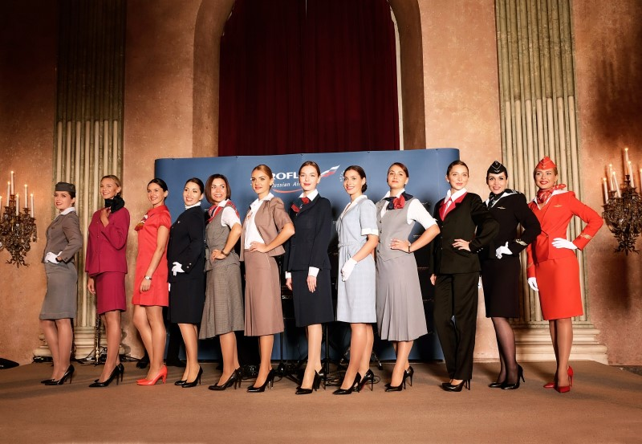
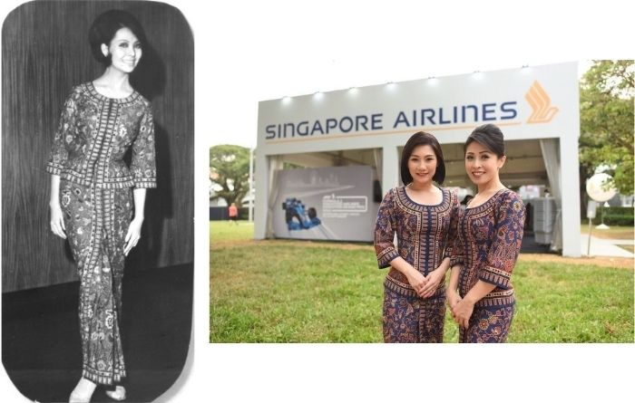
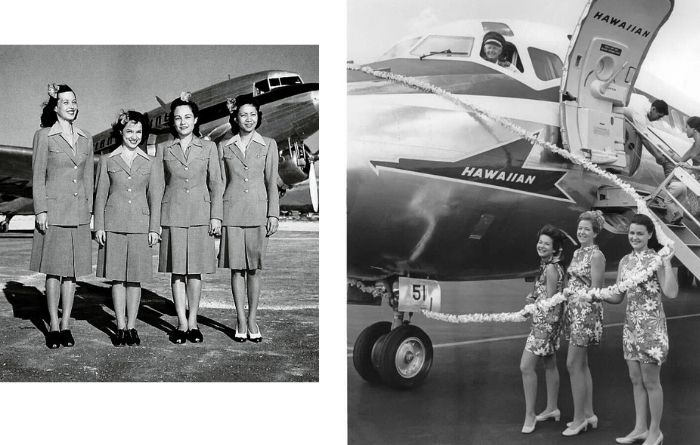
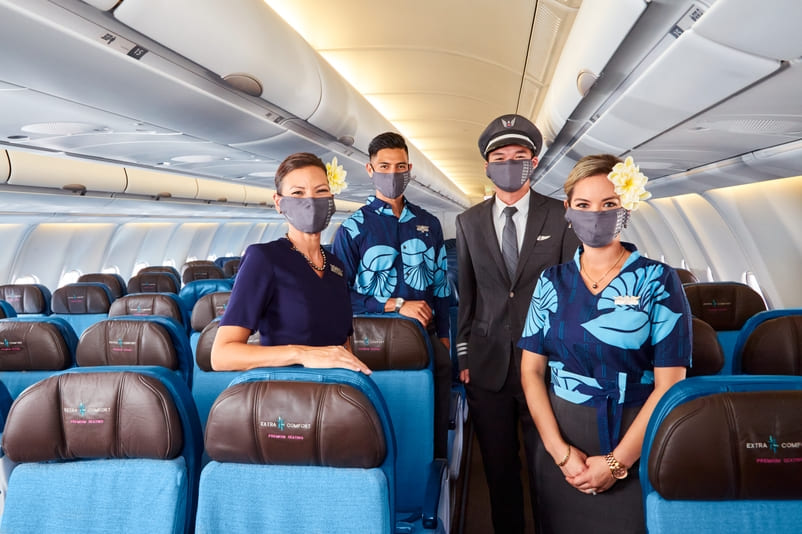

Что произошло, что мы решили написать статью на эту тему?
В конце июля украинская авиакомпания SkyUp представила новую форму бортпроводников, основа которой ‒ брючные
оранжевые костюмы и кроссовки Nike. «Перед тем, как создать новый концепт, мы погрузились в историю
и проанализировали мировую эволюцию формы бортпроводниц от начала 1930-х годов. Она менялась в
зависимости от роли, которую выполнял экипаж в полёте, ‒ говорится на сайте перевозчика. ‒ Времена
изменились, изменились и женщины, поэтому в противовес консервативной классике, каблукам, красной
помаде и пучку пришёл новый, более современный и комфортный образ «чемпионки». Свобода, естественная
красота, индивидуальность, никаких шаблонов и кроссовки, в которых «хочется летать»».

Новая форма авиакомпании SkyUp / источник фото: официальный сайт авиакомпании skyup.aero/ru
Решение перевозчика кардинально изменить форму вызвало бурную дискуссию в Интернете ‒ кто-то
посчитал её неженственной и непривлекательной, а кто-то ‒ модной и современной и главное ‒ удобной
для стюардесс. Сами представители профессии других авиакомпаний посмотрели на форму с некоторой
завистью и сказали, что мечтают о такой.
Это не первый пример спортивного стиля бортпроводников. Так, месяцем ранее исландский
лоукостер
PlayAirlines также
представил вариант формы с кроссовками и брюками. «Новая униформа PLAY относится к новой эре
униформы бортпроводников, ‒ заявляют в авиакомпании. ‒ Забудьте о беготне на высоких каблуках!
Удобные кроссовки ‒ это новый путь, по которому мы пошли».

Новая форма авиакомпании PLAY / источник фото: официальный сайт авиакомпании
flyplay.com
Немного истории: от милитаризма до мини-юбок
Давайте узнаем, в чём были одеты бортпроводники в самом начале истории авиации, и как менялся их
внешний вид с течением времени.
Эллен Черч ‒ первая в мире стюардесса, которая отправилась в свой дебютный рейс с авиакомпанией
Boeing Air Transport (это нынешняя United Airlines ‒ крупнейший перевозчик в мире) в 1930 году. По
профессии она была медсестрой, поэтому и на борт воздушного судна взошла в форме медсестры.
Первая специальная униформа была разработана в 1930-х годах, и в соответствии с духом того времени,
она была в военной стилистике, что и задало тенденцию.

Бортпроводницы авиакомпании KLM в 1936 году / источник фото:
https://blog.klm.com/flying-fashion-evolution-klms-crew-uniform/
В послевоенные годы девушки-стюардессы были представлены в образе домохозяек, стиль был
консервативным и простым, всё ещё прослеживался милитаризм ‒ преобладали тёмные однотонные цвета и
удлинённые юбки. К 1960-м годам униформа стала более женственной и элегантной.

Форма United Airlines в 1968 году / источник фото:
https://edition.cnn.com/travel/article/flight-attendant-uniforms-history/index.html
1970-е стали десятилетием сексуализации профессии бортпроводника. Рекламные плакаты с двусмысленными
лозунгами (Привет, я Шерил – лети со мной) должны были привлечь пассажиров-мужчин. Форма того
времени ‒ это мини-юбки, короткие платья, и даже ботинки go-go.

Форма Southwest Airlines в 1970е / источник фото:
https://www.cntraveler.com/story/a-timeline-from-stewardess-to-flight-attendant
1980-90-е года ‒ это возвращение к консерватизму ‒ форма стюардесс стала похожа на деловые костюмы.
А что у нас?
В СССР первой стюардессой была Эльза Городецкая ‒ в 1939 году она поднялась в небо на 21-местном
воздушном судне ПС-84 по маршруту Москва – Ашхабад. Сначала у советских бортпроводников не было
единой формы, придерживались лишь правила ‒ тёмный низ, белый верх и строгий фасон.
Первая единая униформа у стюардесс Аэрофлота появилась в 1954 году, её надевали только на
международных рейсах. Это были строгие тёмно-синие английские костюмы. В комплект одежды входили
блузка, юбка, приталенный пиджак на одной пуговице, плащ, пальто, фетровая шапочка, закрытые туфли,
перчатки и пилотка.

Первая единая униформа Аэрофлота / источник фото:
https://www.kp.ru/best/msk/forma-styuardess-aehroflota/
Форма Аэрофлота претерпевала изменения несколько раз, следуя мировым тенденциям ‒ например, в 1966
году появился модный аксессуар – круглая шляпка-таблетка (в те времена их носили первая леди США
Жаклин Кеннеди, принцесса Диана, актрисы Одри Хепберн и Софи Лорен). Сексуализации профессии в 70-е,
конечно, в СССР не было, но мода на яркие цвета не прошла стороной, и форма бортпроводниц Аэрофлота
стала включать малиновые, ярко-синие, красные тона и национальные орнаменты.

Бортпроводники Аэрофлота во время Олимпийских игр в Москве в 1980 году /
источник
фото: https://www.kp.ru/best/msk/forma-styuardess-aehroflota/
В среднем изменение формы происходило каждое десятилетие, а последнее ‒ в 2009-2010 годах. Текущая
форма в стиле ретро часто занимает лидирующие позиции в различных рейтингах.

История формы стюардесс Аэрофлота с 1962 по 2016 гг. / источник фото:
twitter.com/aeroflot
Самая необычная форма
Однако не все авиакомпании следовали мировым тенденциям. Были и исключения, которые всегда
выделялись на общем фоне. Например, в 1968 году бортпроводники Singapore Airlines получили форму в
стиле национального костюма под названием саронг кебайя. Её разработал французский кутюрье Пьер
Бальмен. И по сути с тех пор форма бортпроводниц одной из лучших авиакомпаний мира практически не
изменилась.

Форма бортпроводников Singapore Airlines 1968 года и современная / источник
фото
1:
https://www.marieclaire.ru/moda/vyisshiy-pilotaj-pochemu-uniforma-singapurskih-avialiniy-ne-menyaetsya-50-let/,
источник фото 2: https://www.instagram.com/singaporeair/
Hawaiian Airlines в своей форме использует тропические мотивы и цветочные узоры с далёких времён.
Одна из особенностей формы ‒ цветок, заколотый в волосах стюардессы. Этот аксессуар можно увидеть
даже на фото 1943 года!

История цветочной формы бортпроводников Hawaiian Airlines / источник фото:
https://karryon.com.au/industry-news/airline/hawaiian-airlines-uniforms/

Современная форма бортпроводников Hawaiian Airlines / источник фото:
официальный
сайт АК hawaiianairlines.com